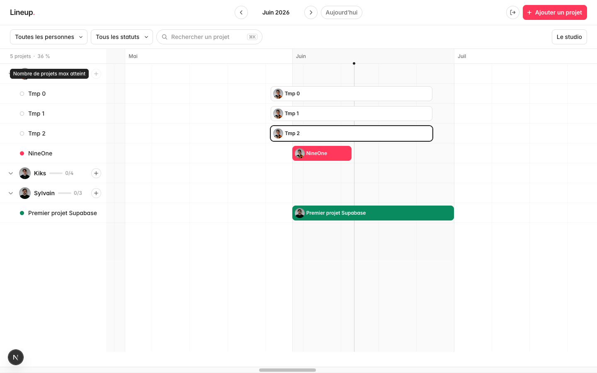
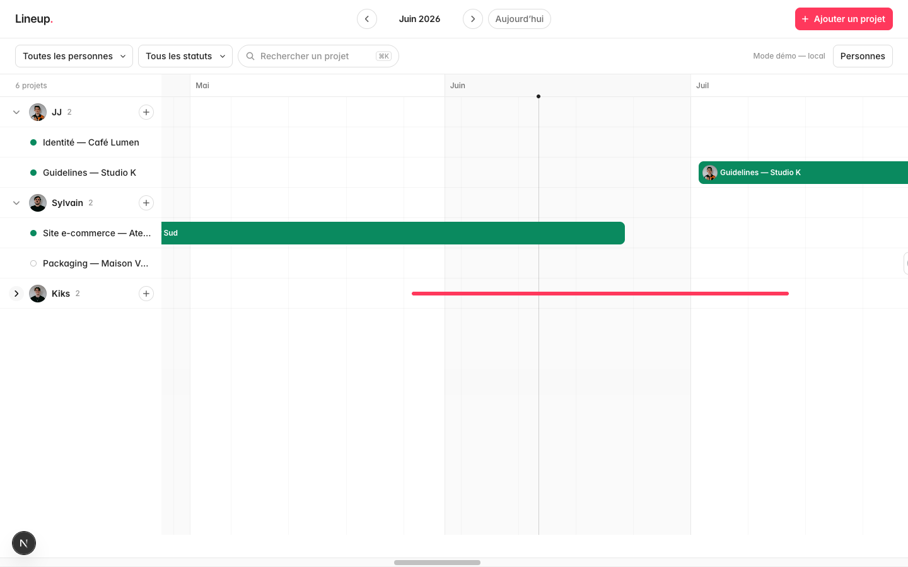
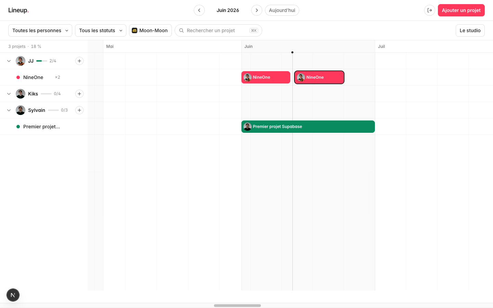
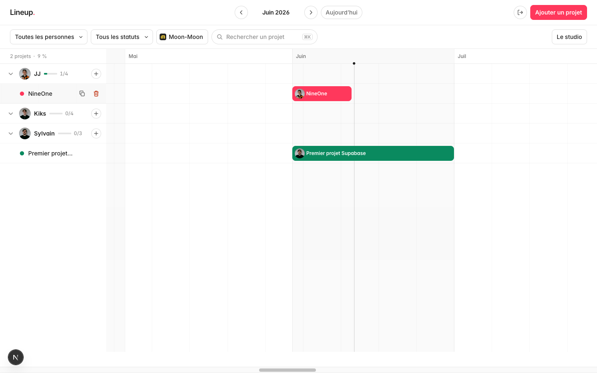
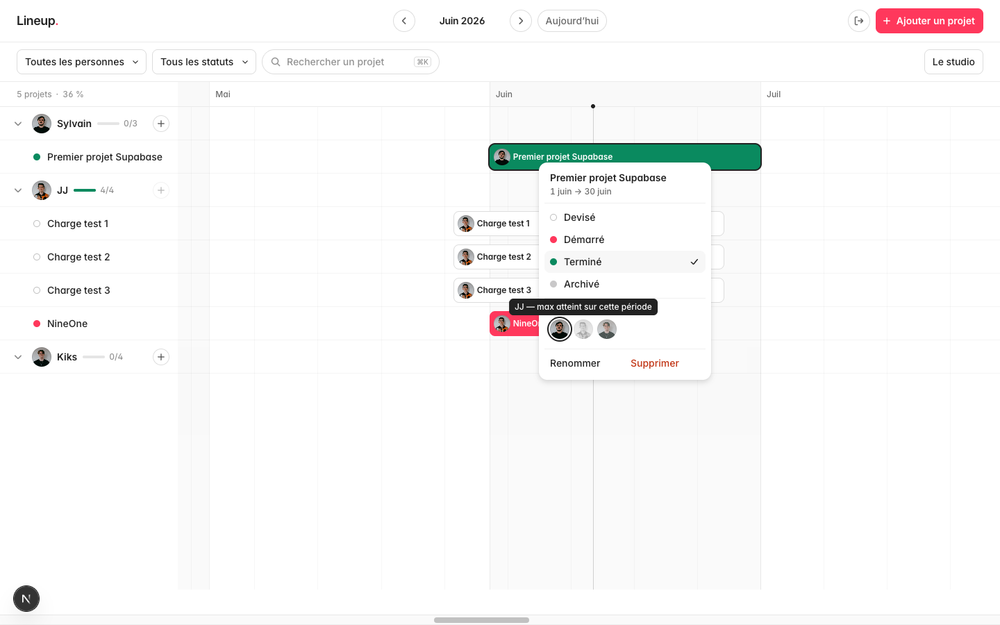

Lineup.
L'outil fait déjà le travail : l'année, les personnes, la charge, la manipulation directe. Ce document liste ce qui le ferait passer d'outil interne correct à outil qu'on n'a plus envie de quitter — classé en cinq territoires, du plus collectif au plus mécanique.
01 — Outil d'équipe
Aujourd'hui l'outil est multi-mains (Realtime) mais mono-identité : un seul compte, aucune trace de qui fait quoi. Ces cinq pistes le transforment en lieu de travail commun.

Un compte par membre (l'auth Supabase est déjà en place, il manque les utilisateurs). En bonus immédiat : les avatars de ceux qui regardent le planning en ce moment, affichés dans le header, et la barre qu'un collègue déplace légèrement teintée pendant son drag.
Un shooting ou un site se fait rarement seul. Permettre 2–3 assignés par projet (avatars empilés au début de la barre), avec un poids partagé dans les jauges : un projet à deux compte 0,5 dans la charge de chacun.
Un fil minimal dans le popover — trois lignes, pas un Slack. « Brief reçu », « En attente retour client depuis le 4 ». Une pastille discrète sur la barre signale qu'une note existe. C'est la mémoire de l'équipe au moment du point hebdo.
Un message Slack (ou email) automatique : ce qui démarre cette semaine, ce qui devait finir et ne l'est pas, qui dépasse 80 % de charge. Une Edge Function Supabase + un cron — le planning vient à l'équipe au lieu d'attendre qu'on l'ouvre.
Un lien signé, sans login, qui montre une vue filtrée — par exemple uniquement les projets d'un client, sans les noms des autres. Utile pour donner de la visibilité à Moon-Moon sur leurs projets sans ouvrir tout le planning du studio.
02 — Lecture & densité
La vue trois mois est le bon défaut. Mais selon la question qu'on se pose — « cette semaine ? », « cet automne ? », « qui est libre en septembre ? » — la bonne focale change.

Semaine / trimestre / année au pinch trackpad ou ⌘ +/−, ré-ancré sur le centre de la vue. La mécanique existe déjà (le dayWidth est une variable) ; il manque le geste et la transition animée entre les crans.
Sous le header des mois, une fine courbe du % studio jour par jour sur toute la plage. Les creux d'août et les bosses de novembre deviennent visibles sans naviguer — et cliquer sur la courbe saute à la date.
Week-ends légèrement teintés, fériés français marqués, et des absences par personne (hachures dans son groupe) qui se déduisent de sa capacité sur la période. Une jauge honnête est une jauge qui sait que Kiks est aux Baléares.
Un toggle de densité : lignes à 32 px au lieu de 48, typo un cran plus petite. Quand le studio aura 25 projets actifs, voir tout le monde sans scroller vaudra le compromis de confort.
Les noms suivent déjà la convention « Type — Client ». Un second mode de groupement (par client plutôt que par personne) répond à l'autre question récurrente : « où en est tout ce qu'on fait pour X ? »
03 — Micro-interactions
Le principe fondateur de l'outil est qu'aucune action courante ne passe par un formulaire. Il reste des gestes naturels que la grille ne comprend pas encore.

Glisser une barre du groupe JJ vers le groupe Sylvain devrait changer l'assigné — avec un fantôme de la barre, le groupe cible surligné, et le refus animé si Sylvain est au max. C'est le geste le plus demandé par la logique même de la vue.
Pendant un drag, quand le bord d'une case approche le bord d'une autre sur la même ligne, un snap magnétique les colle bord à bord (J+1) avec un micro-rebond. Enchaîner des phases devient un geste d'une seconde.
Shift-clic sur plusieurs barres (ou lasso sur la grille), puis déplacement en bloc, suppression groupée, ou changement de statut commun. Indispensable le jour où un client décale tout son projet d'un mois.
⌘Z ne couvre aujourd'hui que la suppression (via le toast). Une pile d'opérations couvrant drags, resizes, statuts et créations enlèverait la dernière peur de manipuler vite — condition du « ultra simple à utiliser ».
Le burst vert du passage en Terminé est la seule célébration du système — bien. La prolonger d'un compteur annuel discret dans le header (« 23 livrés en 2026 ») qui s'incrémente en roulant à chaque burst : la gratification gagne une mémoire.
04 — Flux & raccourcis
Les raccourcis existants (⌘P, ⌘K, ⌘D, Suppr) dessinent déjà un usage clavier. Cinq pistes pour finir le travail.

La recherche actuelle ne filtre que les noms. En faire une vraie palette : « aller à septembre », « nouveau projet pour Kiks », « filtrer Moon-Moon », « passer [projet] en Démarré ». Un seul point d'entrée clavier pour tout l'outil.
Le double-clic crée un mois fixe. Un cliquer-glisser horizontal sur une zone vide devrait dessiner la barre à la durée voulue, dates affichées en live pendant le geste — comme on trace un rectangle dans Figma.
Case sélectionnée : ←/→ déplace d'un jour, ⌥ ←/→ ajuste la fin, ⇧ par semaine. Le réglage fin qui suit toujours un drag approximatif, sans reprendre la souris.
Les récurrents du studio — « Kit UI Shopify, 3 semaines, Moon-Moon », « Identité, 6 semaines » — en templates : durée, statut, tag et personne pré-remplis. Disponibles depuis le + d'un groupe et la palette ⌘K.
Dans le popover, les dates sont affichées mais pas éditables. Un champ « 12 juin → 30 juin » cliquable, qui comprend aussi « +2s » ou « fin août », pour les cas où l'on connaît la date exacte sans vouloir la viser au pixel.
05 — Pilotage du studio
La donnée est déjà là : dates, statuts, personnes, capacités, tag agence. Il manque les vues qui la transforment en décisions.

Le % studio existe sur la fenêtre visible ; le projeter sur les 12 prochaines semaines et signaler en amont celle qui dépasse 90 % (point rouge sur le mois dans le picker). On corrige un planning trois semaines avant, pas le lundi même.
Un champ optionnel « jours vendus » par projet, comparé aux jours calendaires de la barre. L'écart vendu/planifié par personne et par mois est la donnée qui manque à chaque devis suivant.
Une page simple, générée depuis les données : projets livrés par personne, durée moyenne par type, part Moon-Moon vs direct, taux de glissement (dates initiales vs réelles). Export CSV pour la compta. C'est la rétro de janvier, sans tableur.
Les Terminé de plus de 60 jours encombrent les lignes. Un encart discret « 6 projets à archiver » avec action en un clic (et undo) — la grille reste un plan de travail, pas une archive.
Option par projet : le jour J de sa date de début, un Devisé passe tout seul en Démarré — avec une notification du digest (idée 04) pour confirmer ou décaler. Le planning cesse de mentir par oubli.
Et maintenant
Tout ne se vaut pas. Le critère : ce qui renforce le geste fondateur (manipuler le temps directement) passe avant ce qui ajoute des écrans.
Le trio à fort levier, petit effort — 12 (aimantation), 17 (créer au glisser), 18 (dates au clavier) : trois gestes, zéro écran nouveau, l'outil devient nettement plus précis en quelques jours de dev.
Le chantier structurant — 11 (drag vertical pour réassigner) + 14 (undo global) : les deux manques que la main rencontre déjà aujourd'hui.
Le pari équipe — 01 (comptes individuels) + 04 (digest du lundi) : ce qui fait passer Lineup de « l'outil de JJ » à l'outil du studio.
Lineup v1.3 — document généré le 12 juin 2026 · Superserif